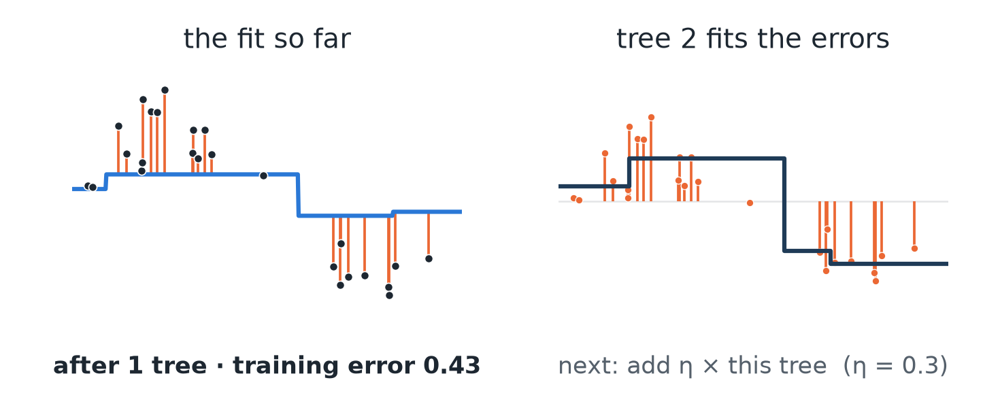
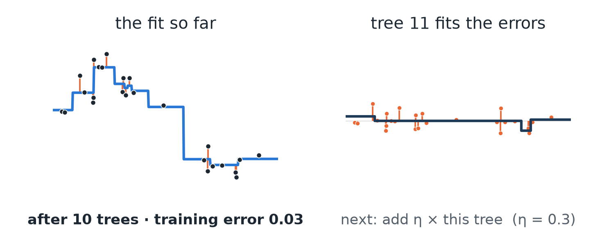
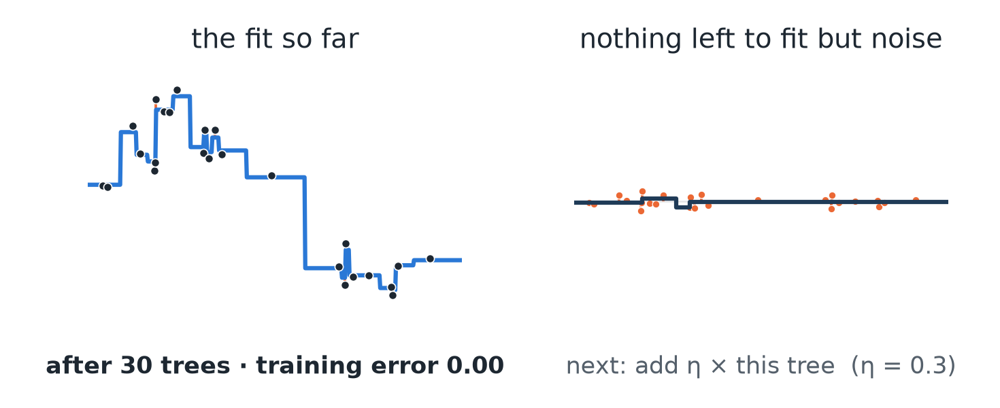
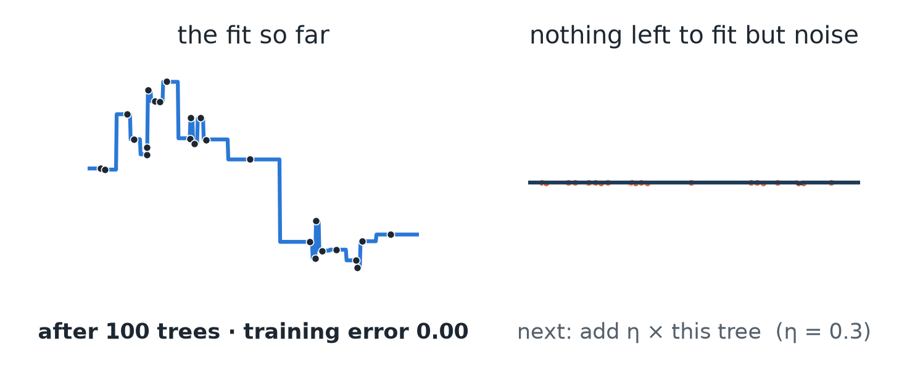

Machine learning foundations
AI, Uncertainty & Simulation Workshop, Mauritius
K-fold cross-validation
Key point
Try each hyperparameter setting (here: the degree) and keep the one with the lowest CV error.


The maths
For hyperparameter \(\lambda\), \(\mathrm{CV}(\lambda) = \frac{1}{K}\sum_{k=1}^{K} e_k(\lambda)\), where \(e_k(\lambda)\) is the average loss on fold \(k\) of the model fitted on the other \(K - 1\) folds. Note, \(\lambda\) is fixed before fitting.
The winner’s curse

The maths
\(\mathbb{E}\big[\max_j \widehat{\mathrm{Acc}}_j\big] \;\ge\; \max_j \mathbb{E}\big[\widehat{\mathrm{Acc}}_j\big]\): the maximum of noisy scores is biased upward.
Data leakage
Rule
Every step that learns from data (scaling, feature selection, tuning) goes inside each training fold.

Which part of the test error shrinks most?
You double the training set for the degree-9 model.
✗A. Noise
✗B. Bias
✓C. Variance
✗D. All three equally
Answers
- A ✗ Noise is in the data, not the model: more data can’t remove it.
- B ✗ Degree 9 can already follow the curve, so its bias was near zero.
- C ✓ More data steadies each fit: variance falls from 0.73 to 0.05.
- D ✗ The parts react differently: variance falls, noise stays, bias barely moves.

Vote · 38549456
Nested cross-validation
Key point
Score the whole selection procedure on data it never saw.

Same data, a different model

A tree is a set of if–else rules


The maths
A tree with \(T\) leaves cuts the inputs into regions \(A_1, \dots, A_T\) and predicts a constant \(w_j\) in each, so that \(f(x) = \sum_{j=1}^{T} w_j \, \mathbb{1}\{x \in A_j\}\). For classification, \(w_j\) is the majority class in \(A_j\); for regression, the mean of the \(y_i\) that fall in \(A_j\).
Bagging: average many deep trees

Random forests
Key point
A random forest is bagging with one change: each split may use only a few features, drawn at random afresh at every split.

Gradient boosting: fit the errors, tree by tree







The maths
Start from \(F_0\), the mean of the \(y_i\). Round \(m\) fits a small tree to the residuals \(r_i = y_i - F_{m-1}(x_i)\) and adds a fraction \(\eta\) of it: \[F_m(x) = F_{m-1}(x) + \eta\,\mathrm{tree}_m(x)\] For squared loss the residuals are the negative gradient of the loss with respect to \(F\), so each round is a step of gradient descent. For any other loss, each tree is fitted to the negative gradient instead (the pseudo-residuals); with log loss for classes, that is \(y_i - p_i\), the label minus the predicted probability.
More trees: error falls, then flattens
Key point
One deep tree gets 27% of test cases wrong; bagging 17%; a random forest 15%.

The maths
Each tree has variance \(\sigma_t^2\), and any two trees have correlation \(\rho\). The average of \(B\) trees has variance \[\mathrm{Var}\Big(\frac{1}{B}\sum_{b=1}^{B} \hat f_b(x)\Big) = \rho\,\sigma_t^2 + \frac{1-\rho}{B}\,\sigma_t^2\] More trees shrink only the second term. Random feature subsets lower \(\rho\), and with it the first.
Growing a tree: the best split
Key point
Try every feature and threshold; keep the split whose two halves are purest.

The maths
For classification, use Gini impurity. The Gini impurity of a node in which a share \(p_k\) of the points has class \(k\) is \(G = \sum_k p_k(1 - p_k)\). It is 0 for a pure node and 0.5 for two balanced classes. A split is scored by the Gini of its two halves, weighted by their sizes. For regression, the squared error replaces Gini.
Out-of-bag error: a free held-out set

The maths
A row is missing from a bootstrap sample with probability \((1 - 1/n)^n \approx e^{-1} \approx 0.37\). Scoring each row with only the trees that never saw it, and averaging, gives the out-of-bag error.
A forest’s spread is not an interval

More trees, with XGBoost
Key point
On this toy data, XGBoost (16%) ties with the random forest (15%).

From a linear model to a network

The maths
\[f_\theta(x) = W_2\,\mathrm{relu}(W_1 x + b_1) + b_2, \qquad \mathrm{relu}(z) = \max(0, z)\] \(\theta\) collects every weight and bias. Without the relu, \(W_2(W_1 x + b_1) + b_2\) is again a linear function of \(x\): stacking linear layers adds no power.
Overfitting in networks
Key point
Same cure as for boosting: stop early, at the lowest loss on held-out data.

Training: minimise a negative log-likelihood
Key point
Loss = −log(the probability the model gives to the true answer).

The maths
If the model predicts \(y \sim \mathcal{N}(\hat y, \sigma^2)\), then \(-\log p(y) = \dfrac{(y - \hat y)^2}{2\sigma^2} + \log \sigma + \text{const}\): for a fixed \(\sigma\), the squared loss. Training finds the \(\theta\) that minimises the average loss over the training data.
A network that outputs a distribution

The maths
The network outputs a mean \(\mu_\phi(x)\) and a standard deviation \(\sigma_\phi(x)\): a bell curve over \(\theta\) whose centre and width depend on \(x\). It is trained on the simulated pairs with the loss \(-\log q_\phi(\theta \mid x)\) from the last slide.
Calibration is not coverage